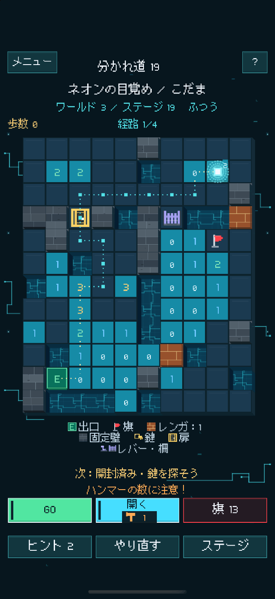

5つのポイント＆クリック・アドベンチャー
TinyStory
動物の主人公、色鮮やかな島、不思議な謎。5つのTinyStoryの冒険から、気になる物語を選ぼう。
iOS · Android · ゲームによりパソコンにも対応
TinyStoryを詳しく見るAnneMu’s Games · AML Creation
TinyStoryとCelestwaldで、色鮮やかな世界や個性豊かな仲間、さまざまな謎に出会おう。ポイント＆クリックで楽しむ2つの冒険シリーズです。
すべてのゲームを見る ↓5つのポイント＆クリック・アドベンチャー
動物の主人公、色鮮やかな島、不思議な謎。5つのTinyStoryの冒険から、気になる物語を選ぼう。
iOS · Android · ゲームによりパソコンにも対応
TinyStoryを詳しく見る
魔法の世界で楽しむ2つの冒険
錬金術師の見習いになって夢の木を見つけ、その魔法の種とともに旅を続けよう。Celestwaldの1作目と2作目を紹介します。
iOS · Android · 第1作はSteamとitch.ioでも配信
Celestwald 1 & 2を詳しく見るGoogle PlayとApp Storeで配信中
安全なマスをつないで道を作るマインスイーパー。
数字を読んで地雷を見つけ、小さな光をパズルの世界へ導こう。Android・iOSで60パズルを無料で楽しめます。
Android・iOSで配信中



ほかの世界も探索しよう
Mochiを自分好みに飾ったり、Mahjong Castleでタイルのパズルを楽しんだり。

かわいいクリエイティブゲーム
Mochiというバーチャルペットを作り、小さなぬいぐるみに着せ替えをしたり、部屋を飾ったりしよう。ステッカー集めやミニゲームも楽しめます。毎日Golden Cloudで遊ぶと、このかわいい世界で使える無料のBunny Tokensを獲得できます。
iOS · Android
Mochi Plush Kawaiiを詳しく見る
パズルとロジック
空いているタイルを合わせ、14の場所に広がる240のレベルで魔法のお城を探索しよう。無料で遊べるのは庭の30レベルと氷の4レベル。庭のレベル30をクリアすると、無制限に楽しめるClassicモードが開きます。Android向け。Adventure Packは任意の買い切り購入です。
Android
Mahjong Castleを詳しく見るゲームコレクション

ポイント＆クリック・アドベンチャー
6匹の子猫と、6つの小さな冒険。それぞれの猫の世界を探索し、アイテムを集めて、楽しいポイント＆クリックの謎を解こう。色鮮やかな場面とさまざまな物語を、iOSとAndroidで楽しめます。
iOS · Android
Cats in the Box Adventureを詳しく見る
ポイント＆クリック・アドベンチャー
小さなピンクの主人公と一緒に、砕けたクリスタルのかけらを探そう。Green、Fire、Candyの3つの世界で30のレベルを探索し、アイテムを集め、謎を解きます。道中の罠には気をつけて。冒険とパズルを楽しめるゲームで、モバイルとitch.ioで配信中です。
iOS · Android · Windows · macOS · Linux
Fantasiant · Tiny Heroを詳しく見る
かわいいクリエイティブゲーム
Liliとテディベアに着せ替えをして、家具や色、おもちゃで部屋を飾ろう。自分らしくアレンジした部屋は保存され、また戻ってくることができます。iOS向けの部屋づくりゲームで、広告なし、オフラインでも遊べます。
iOS
Lili’s Bedroomを詳しく見る
子ども向けパズルゲーム
形合わせやメモリーゲームを楽しめる、やさしいフェルト風の子ども向けパズルゲーム。新デザインは同じ App Store リンクで近日公開予定です。
iOS · App Store
Mini Funny Puzzles を見る
Android・iOSで配信中
安全なマスをつないで道を作るマインスイーパー。 数字を読んで地雷を見つけ、小さな光をパズルの世界へ導こう。Android・iOSで60パズルを無料で楽しめます。
Android · iOS · Google Play · App Store
Lumen Mineを見る Google Playでプレイ App Storeで配信中 ショート動画を見る
パズルとロジック
22種類のジグソーパズルと132種類の四角いパズルで、色鮮やかな絵を完成させよう。気分に合う難しさを選べ、保存した進み具合から再開できます。iOSで2種類の絵のパズルを楽しめます。
iOS
Puzzles Mixを詳しく見る
パズルとロジック
数字のヒントを読み、隠れた地雷に印をつけ、一手ずつ慎重に進もう。2つの世界に広がる120のレベルには、特殊な地雷や手数制限も登場します。色鮮やかなマインスイーパーのパズルをiOSで楽しめます。
iOS
Little Minesweeper Guyを詳しく見る
リズムとリラックス
動く円が光る弧に届いたらタップ。コンボをつなげながら、イラストの背景を見つけよう。穏やかなZenモードと、テンポの速いFastモードを選べます。10の世界のうち5つは無料。追加のPremiumは任意の買い切り購入です。iPhoneとiPad向けのリズムゲーム。
iOS
Zen Circle Spiritを詳しく見るMochi Plush Kawaii · 2026
Mochiを作り、小さなぬいぐるみに着せ替えをしたり、部屋を飾ったり、ステッカーを集めたりしよう。毎日Golden Cloudで遊ぶと、無料のBunny Tokensを獲得できます。
詳しく見る Mochi
AML Creation · 音と穏やかなひととき
雨、波、暖炉、環境音を重ねて、自分だけの音の空間を作ろう。音ごとの調整やタイマー設定ができ、広告なしでオフラインでも聴けます。SomnifoxはiPhoneとiPad向けのサウンドアプリ。無料の機能と任意のPremiumがあります。
詳しく見る Somnifox ↗